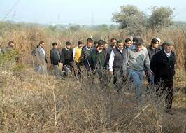
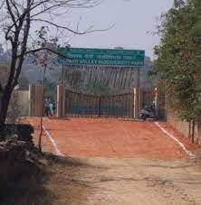
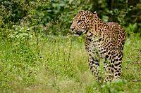

  
Tilpath Valley Biodiversity Park, is a 172 acre biodiversity area in the South Delhi Ridge within the Northern Aravalli leopard wildlife corridor, northwest of Asola Bhatti Wildlife Sanctuary, south of Sainik Farm. Being developed since 2015, it was officially inaugurated as Delhi's third biodiversity park on 3 February 2018. Previously this area had the valleys dotted with sand-mined quarries, dried up springs due to lack of recharging of groundwater, no forest cover except the invasive weed species of prosopis juliflora (vilayati kikar), lantana and parthenium. During the restoration, invasive foreign species were replaced with the three layers of forest community: native trees, shrubs and grassland. Scrubland was restored to attract the reptiles and birds. In 2015, 40,000 volunteers planted over 100,000 trees within 6 hours. In 2016, 20,000 trees were planted by the volunteers again.The park now has the grasslands, hilly terrain with over 105 tree and shrubs species.[2] Native species include mahua, haldu, sheesham and bael. In 2016, the park was teeming with over 103 bird species, 32 butterflies species, 15 herpetofauna (reptiles and amphibians) species and eight mammalian species including leopard, hyena, Indian rock python, jackals, neelgai, mongooses, porcupines, small Indian civet, gecko, Sirkeer malkoha cuckoo, nightjar, Indian paradise flycatcher. Wildlife surveys are conducted using pugmarks tracking with the pug impression pad (PIP) and by photographing the wild animals. Further reintroductions of mammalian megafaunas such as chinkara, chital deer, hog deer, has been proposed. Grasslands or rangelands are critical ecosystems that not only generate a variety of ecological services for the society but also enhance the trophic levels of the area. The major species found in the grasslands are Cenchrus, Heteropogon, Chrysopogon, Aristida, Desmostachya etc. Grasslands once developed on hilltops will also help in reviving springs and generating water for the area. These ecosystems also form the food base for herbivores and support higher trophic levels such as carnivores. Plenty of grassland birds such as Red avadavat, Indian Silverbills, Bee-eaters, House sparrows, Grey Francolin, Pied Bushchat, Crested Lark, Paddyfield Pipit are there to spot on. Animals like Indian Hare and Jackal are also there to spot on.